Using speaker management
In this article, you’ll learn what Speaker Management is, how to set it up and use it for your event.#
What is Speaker Management?
Speaker Management allows event admins to collect, manage and display invited speakers and their talks separately from the standard submission process.
To enable Speaker Management, you need to have switched to the new session overlay design.
View our video showing you how to use Speaker Management, or continue reading below for step-by-step instructions.
Skip To:
How To Create The Invited Speaker Form
How To Manually Add Invited Speakers
The Invited Speaker Table Explained
How To Add Invited Speakers To Your Event Program
How To Create The Invited Speaker Form
From your dashboard, navigate to the left-hand menu, click Speaker Management, then click Form in the dropdown menu.
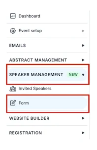
On the next screen, you’ll be able to create your form.
There are questions already set up that you can use, change the order of or delete.
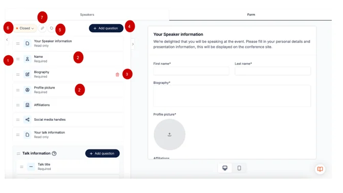
- To change the order of the questions, click on the two lines to the left of the question and drag and drop to where you want it.
- To edit a question, simply click on the question box; it will pop out into its own screen to the right. Fill in the necessary information and click Save at the bottom.
- To delete a question, hover over it and click the red bin icon that appears to the right of the question.
- You can add a question by clicking on the Add Question button.
- Speaker role labels enable you to name and categorise your invited speakers. These labels will be visible on the conference platform. Simply click on the tag icon at the top of the page, fill in the fields that appear in the pop-up screen and click Save.
- To set the speaker form to ‘Open’ means speakers can complete the form. To do this, click the Orange button at the top and select Open. This button will turn green. To close the form (stop speakers from completing and submitting their forms), click on the green button saying Open and select Closed.
- To copy the link to the speaker form for you to paste on your website/social media or to an email, click the link button at the top of the page.
You can always preview your form to the right of the screen.
When you’ve finished completing it, scroll down to the bottom and click Save.
You can also preview how the form will look on a mobile device. Click on the phone icon to view.
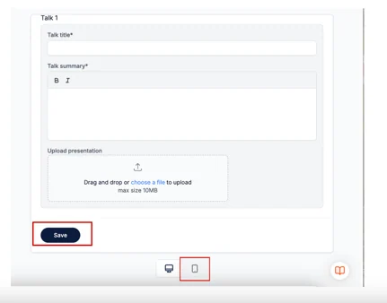
How To Add Invited Speakers
Once you have created your form, you can send the invited speaker form link to people for them to fill in their details and talk information.
When completed, they will click Save, and the form will be automatically sent back and appear on the speaker table.
To view and edit completed forms, go to the speaker table, by clicking on the Speaker management tab in the left-hand menu, and select Speakers from the drop-down list.
On the next screen, you’ll see prospective speakers who have sent in their completed forms. Click on the speaker's name, and their form will pop up to the right of the screen.
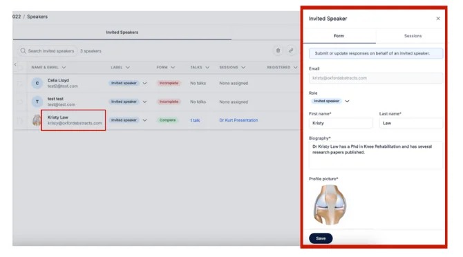
How To Manually Add Invited Speakers
To manually add your speakers, from your dashboard, navigate to the left-hand menu, click Speaker Management, then select Invited Speakers.
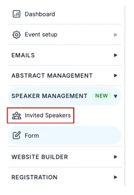
If it’s the first time you’re manually adding a speaker, you'll see a box with a helpful video showing you how to use Speaker Management. Underneath this, there is a button called, Add Manually.
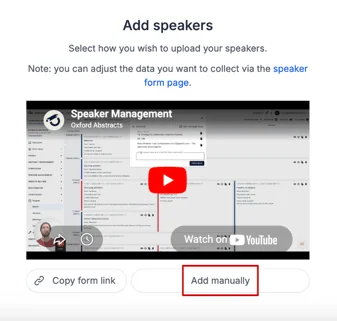
Click this button, and add your speaker email addresses, each on a separate line, and click the Add Invited Speaker Button.
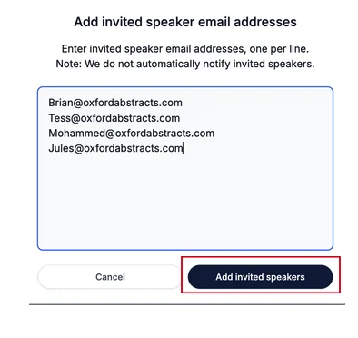
Your invited speakers will now appear on the Invited Speaker Table (found under the speaker management tab on the left-hand menu).
When you have started to populate your speaker list, to add any other speakers manually, go to the speaker table, click the Add Invited Speaker button at the top right of the table, and follow the instructions in the above paragraph.
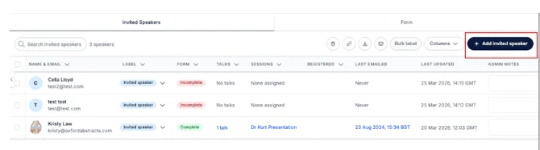
The Invited Speaker Table Explained
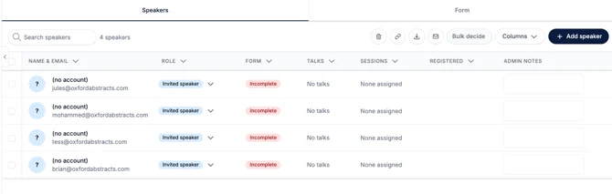
To delete an invited speaker, click the box to the left of their name & email address. And then click the bin icon at the top of the page.
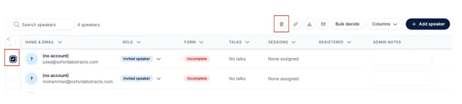
- Copy the link to your invited speaker form by clicking on the link icon.
- Export and download your speaker list via CSV by clicking on the download arrow icon.
- Email selected speakers by clicking on the envelope icon.
- You can bulk decide speaker roles by clicking in the box to the left of the speaker name and clicking the bulk decide button.
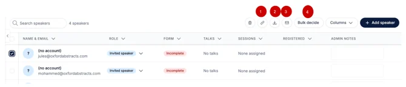
The Role tells you what speaker role has been assigned to the speaker.
The Form column indicates whether the invited speaker has filled out the speaker form.
The Talk column indicates if they have a talk.
The Session column indicates whether they have been assigned a session.
The Registered column indicates whether the speaker has registered.
How To Add Invited Speakers To Your Event Program
From your dashboard, go to the left-hand menu and click on Conference > Program > Builder.
Click on a session and scroll down to the bottom of the panel and click on Attach Speakers.
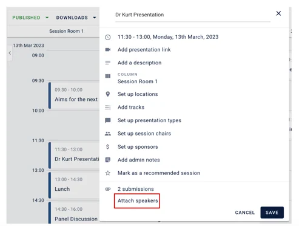
On the next screen type into the box either the speaker name, email, or talk title, you’ll see a little box appear underneath with all queries relating to what you are typing.
From this list, select which one you want to add and click Continue and then click Save.
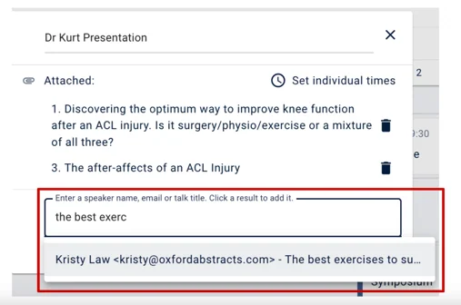
When you or an attendee now clicks on that session, they will see the speaker and talk you’ve added.
If you need any further help, please contact our Support Team via this Contact Form.
Did this page solve it?
Thanks — this helps us fix it.
Didn't solve it? Ask our support team
No question is too small, and there's no charge for asking. Raise a ticket and someone who knows the software will pick it up.